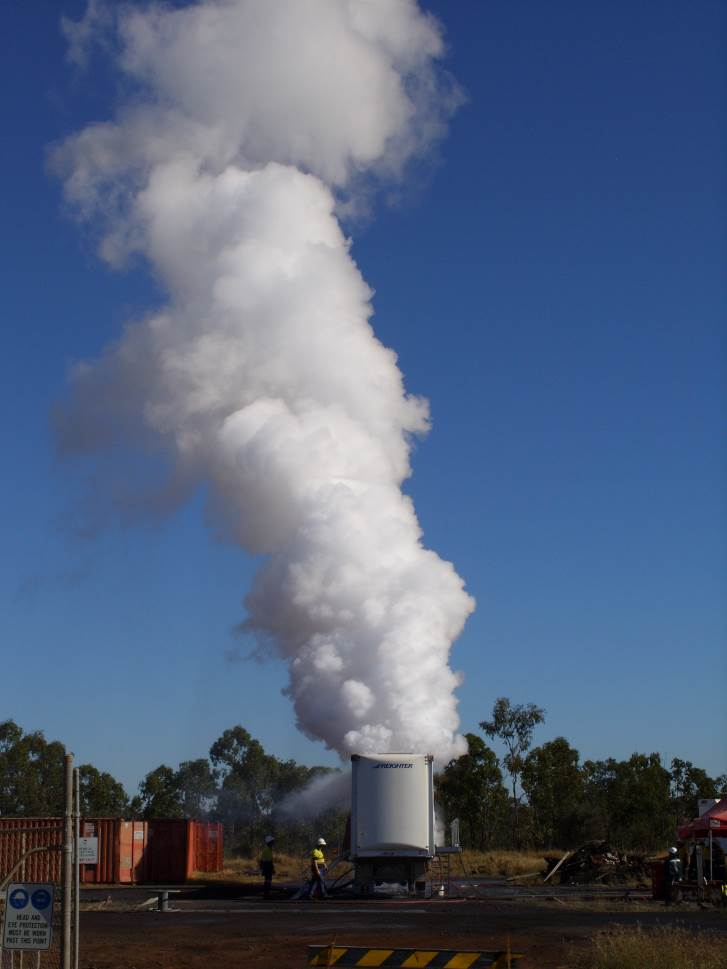
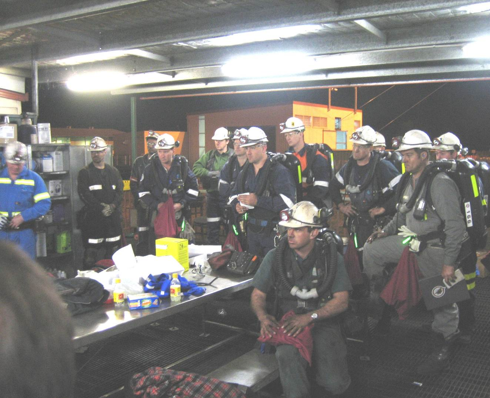

History 1985 - 2009
July 16. Moura No.4 mine explosion, 12 lives lost.
Qld Mines Rescue’s largest operation with 23 teams going active during the rescue attempt and recovery.
Photo above is a safety lamp starting a methane explosion in an experiment conducted by SIMTARS after the Moura No.4 explosion.
Insert: the actual lamp believed to have started the No.4 explosion (found under shuttle-car by Chris Glazbrook and his team from Blackwater Mines Rescue Station during the investigation).
Following is a brief overview of the rescue teams activities, to show the magnitude of this kind of operation and the undaunted efforts of these mines rescue individuals. Their efforts will never be forgotten and each and every one of them shall be shown the respect they deserve as they have certainly earned it (full details are available in the report kept in the QMRS head-office).
- 16 July 1105, a number of men on the surface saw a thick cloud of dark grey dust rising above spoil piles.
- 1200 noon, first rescue team instructed to travel in-bye towards the dips section and search for survivors. Capt; N. Pickering.
- Team 2, a short while later were instructed to check all ventilation appliances and the quality of atmosphere Capt: L. Graham.
- From information gathered it was apparent an ignition had taken place and further rescue attempts suspended until accurate assessment of atmosphere established.
- 17 July 0933 with no evidence of explosive atmosphere Team 3 Capt; J. Blyton were instructed to inspect the area from the surface to in-bye to the 4 South seals. Blue haze in the air.
- 1255 Team 4 Capt; N. Pickering instructed to explore the workings from 12c/t to 21c/t. Visibility was about 20m.
- 1455 Team 5 Capt R. Sudall, instructed to explore beyond 21c/t. A tube bundle indicated an explosive atmosphere in 4 south so the team was withdrawn.
- 2100 it was established the explosive mixture in the dips was being controlled by variations in atmospheric pressure. A 7 hour barometric “window” was available and Team 6 Capt; C. Glazbrooke was given the same instructions as previous Team 5, explore beyond 21c/t. The team entered the mine at 2225.
- Team 6 reached 27c/t , returned to surface by midnight and had located 10 bodies, visibility in-bye 23c/t 2 to 3 metres, no evidence of fire nor the source of reported smoke and all believed that the smoke was in fact dust.
- Barometric pressure had again dropped resulting in an explosive atmosphere out-bye of 4 south seals.
- 18 July 0500, fans started, methane levels began to drop to 1.2% and Team 7 Capt; R. Sudall entered the mine at 0905 and instructed to confirm tube bundle results and extend the sample line down the south return. In the dip South return smoke was restricting visibility to 40m.
- 1205, Team 8, Capt J. Blyton, entered the mine to extend the tube along No.1 Hdg from 19 to out-bye 25c/t. Team noticed vast improvement in air flow out-bye of 22c/t.
- After inspection of South return in-bye of 19c/t, visibility restricted to about 25m by blue smoke, there was a very strong fire stink and 90ppm CO. It was evident that an active fire of unknown location was present in-bye. This was not detected by exploration teams or monitoring systems.
- It was decided due to the unreliability of the sample line and limited information available, no further recovery attempts would be made until a borehole sample point was in 25c/t No.1 Hdg. It was also decided to investigate inerting the dips section with gas or water.
- As a result of discussions, it was decided to drill a bore hole into 25c/t No.1 Hdg. Commenced at 2100.
- 19 July, some 7 holes were sunk, by 2200 water injection was ready, but put off at 1030 over concerns raised by the chemists.
- 20 July it was decided to inject liquid nitrogen and water down different holes. The experiment with liquid nitrogen was less than successful and abandoned at 1800. Water injection was also unsuccessful with uncased holes.
- 21 July, approx 1130, Team 9, Capt R. Sudall was instructed to examine the dips workings in-bye 23c/t and if time permitted take vent readings in the South return in-bye of 20c/t.
- 1615, the first real attempts to inert with Nitrogen were made, by 1800 5 tonnes per hour was achieved. By 0200 the next day this exercise was abandoned.
- 22 July, 1000, Team 10 Capt; J. Blyton, Team 11 Capt; I Kraemer went underground.
- Team 10 entered a smoke filled atmosphere at 23c/t with visibility down to 6m, in 24c/t between 2 and 3 Hdg they discovered a large area of smouldering floor coal about 60 m2, no open flame was visible. Team 11 commenced construction of 5 brattice seals.
- All roads were effectively sealed by 1205, while these teams were underground Nitrogen injection recommenced.
- The effect of sealing and nitrogen injection brought down the oxygen levels to 16.5%.
- Borehole 10 was started at 1700 over the fire to inject nitrogen directly over it.
- 23 July 0830, hole broke through and Nitrogen was pumped through the drill stem.
- Now with sufficient Nitrogen on site it was decided to recover the bodies that day.
- Five rescue teams and 35 people in all were involved in the recovery.
- Team 12, Capt C. Glazbrook, (team of 8) would prepare the bodies for transport by placing them in suitable body bags. Each bag would be carried out-bye to 25c/t. There were two men still to be located.
- Team 13, Capt D. Gordon, would carry the body bags out-bye from 25c/t to the door in the brattice seal, about 200m.
- Team 14, Capt R. Sudall, would monitor atmosphere outside of seal area and assist as required. The bodies at this point would be loaded into modified MPV transport modules.
- Team 15, Capt J. Blyton, would remain at F.A.B and relieve Team 13 when required.
- Team 16, Capt I. Kraemer would remain at F.A.B on stand-by.
- Physical conditions in-bye of 23c/t were extremely arduous with high temperature and humidity, very poor visibility and blast debris, which were all causing considerable discomfort. The first 4 bodies were bagged and carried to 25c/t, but it was evident that the extreme conditions were having a detrimental effect on the team. The duties of the advance team were confined to locating and bagging the bodies and leaving them for pick-up by the carrying teams.
- The final two bodies were located one of which was under the shuttle car that had to be jacked up 50mm. After preparing all the deceased for transport this team returned to the F.A.B at 1515.
- Eventually all remaining teams, including the stand-by team, were used to carry the bodies out to the transport module.
- During this stage of the operation, a serious malfunction occurred in the breathing apparatus worn by Mr. I. Kraemer.
- This unit was replaced by a Robert Shaw therapy unit and the team retreated out-bye. About 70m in-bye the seal and whilst negotiating a water filled swilly, the head of the therapy unit blew off and landed in the water. Mr. Kraemer could see the seal, so he held his breath and ran out-bye to fresh air.
- 1715 all bodies were transported to the surface.
- Rescue teams were debriefed and a detailed plan showing body positions and other relevant information was prepared before the men left the site.
- 24 July, it was decided to cover the fire area with fly-ash and about 200 tons would be needed.
- After a number of set backs the ash was injected with nitrogen and by 1800 the first truck load was emptied.
- 26 July, Teams 17 Capt; R. Sudall, 18 Capt; J. Blyton, and 19 Capt; I. Kraemer were sent in to; inspect workings out-buy of the seals, set up fresh air base at 21c/t No.4 Hdg, double bag all seals and erect a suitable air lock in the seal in No.4 Hdg, to install a compressed air de-watering pump in the swilly in No.4 Hdg
- 27 July, Team 20, Capt; I. Kraemer, entered the sealed area and established the fly-ash had completely covered the heated zone. Nitrogen continued to be pumped.
- Team 21, Capt; L. Graham entered to sealed area at 1230 and erected five brattice stoppings in c/t’s between No.4 and 5 headings.
- 28 July, Team 22 Capt J. Blyton, entered the sealed area and completed the stoppings.
- Team 23, Capt L. Graham, made a thorough inspection of all roadways in-bye of the seals to ensure no hot spots remained. After inspection L. Graham reported it was safe to ventilate.
- Shortly after midday, the out-bye stoppings were closed and the five seals opened. This operation was controlled by Mr. Dave Kerr Superintendent Mines Rescue Service.
- All men withdrawn to surface as the atmosphere returned to normal.
- The nitrogen continued to flow at 4 tones per hour until shut down at 1600.
Letter presented to the rescue service after the operation.
In late 1988 a recommendation to the minister “That the state should become one locality for the purpose of mines rescue” was accepted.
January 1 this became a reality and all staff became employees of the state committee under the terms of their past employers.
1989 E.K Healy cup winning team from Collinsville
1990 E.K Healy cup with long standing rescue member Gary Dixon who is also a sponsor of many rescue competitions.
July 27 a new head-office building was opened in Dysart by Minister Mcgrady.
August 7, Moura No.2 mine explosion, 11 lives lost.
Although not deployed, the Mines Rescue Brigade were involved in various aspects of the incident after the explosion. The inquiry identified a number of issues related to mines rescue that it wished to mention as a means for leading to improvement of effectiveness of the vital service and these were:
- "The important training role of mines rescue be formally recognised and that the service be adequately resourced to fulfill that role through the provision and maintenance of such things as uniform, up-to-date literature, the further development of training expertise, and acquisition of appropriate training aids.
- The Mines Rescue Brigade be included in any risk evaluation exercises conducted at mines that may impact on the effectiveness of mines rescue.
- Mines be required to draft, maintain, and supply to the mines rescue brigade on at least a quartly basis, up-to-date plans showing such things as current workings, mine ventilation arrangements, roadway support methods, gas drainage, water reticulation, electrical and pumping installations, gas monitoring points, and any other aspects of mine infrastructure which may impact on the effectiveness of the operation of the brigade.
- Mines draft and maintain and make available to mines rescue on request, plans showing the location and status of surface boreholes to the mine workings and periodic external review be conducted of mine disaster control arrangements as they impact on the effective operation of the mines rescue brigade."
Moura No.2 sealing portal by dozer
Moura No.2 sealing
Moura No.2 fan after explosion
Moura No.2 1994
"Inertisation.
It is further recommended that funds to be made available through the Queensland Government in order to obtain such a system, such that equipment for the Inertisation of a coal mine or parts of a mine, with appropriately trained people and operating systems, be readily available for use in Queensland coal mines. This equipment should be maintained and operated by the Queensland Mines Rescue Service in a central location such that it can service all mines in Queensland on a fee-for-service basis."
Recommendations of the Queensland Mines Rescue Brigade Committee "Vision 2000", (developed to investigate the expansion of the Mines Rescue Service in Queensland), saw the development of the Queensland Mines Rescue Brigade (QMRB) into the Queensland Mines Rescue Service (QMRS) as a separate body with a separate and independent position as the Queensland Mines Rescue Service.
The minister for mines and energy, Tom Gilmore and the previous minister Tony Mcgrady, both support this proposal. This now requires parliamentary process, a constitution, and legal development of the business unit with its own charter. Funding of core business activities will remain, with fee-for-service for non-core activities.
Booval station members 1997
Saw the introduction of the Matt Best trophy for the best captain at the E.K Healy cup competition. The trophy is in honour of Matt Best a strong supporter and member of the Rescue Service.
Winners of the trophy up to 2008
- 1998 Mark McCamley
- 1999 Tom Turns
- 2000 Des Cosgrove
- 2001 Laurie Dixon
- 2002 Tom Turns
- 2003 Geoff Nugent
- 2004 Tom Turns
- 2005 Mark Freeman
- 2006 Andy Neville
- 2007 Wayne Pate
- 2008 Brad Watson
Below is a poem written in memory of Matt by Chris Rawlings
CHAMPION OF THE QUIET TIME
The shift has long since finished and another day is gone
It’s the time I pause to contemplate all the tasks left undone
And all the people we have met, who’ve helped us on our way,
Who, maybe in their efforts, has saved us for this day.
I remember those who’ve seen the smoke arising from the mine
The pools of sadness in the eyes of those who wait and pine
For loved ones, whom they can’t embrace and share a cheer
But all they have are memories, deep feelings and a tear.
Yes, mining is a savage beast, when challenged in daring ways,
It can bite when you least expect it and change your future days
If you treat it with disdain, it can cause you great despair
And rip your very being and leave your soul threadbare.
There are, however, those who learn from the lessons of the earth
Who were borne to help their fellow man and did so from their birth
Who lived to educate their mates, often not in traditional ways
To work within the rules of the game that nature often plays.
There is one in particular whose achievements come to mind,
A man of great commitment, more courage would be hard to find.
He chose as his life’s objective to improve the miner’s ways
To make the workplace safer for all their working days.
For safe mining was his life and no offence he would endure
From those who would cut corners or not listen to the cure.
The bosses and the workers, they were treated all the same
For danger has no friends when you want to play its game.
In the quiet times to come, his work will be remembered
But who can fill the shoes of one whose life was so intended
To keep us on the straight and narrow, to ensure we did it right
To be certain that the laws of nature are known and held in tight.
For he’s the one who is in my mind, as I sip that final beer
I wonder who will look after us and take away our fear
And who will keep us from the edge, who will take on the quest
And follow in the footsteps, of the one and only Matt Best.
Following a recommendation from the Moura No. 2 inquiry task group 5, the GAG 3-A jet Inertisation system was purchased by the Queensland Government and presented to the Mines Rescue Service to operate, maintain and train personnel for an emergency response to Queensland mines.
April 7 to 18. The unit was tested at Collinsville and a comprehensive report was tabled by SIMTARS.
Gag set up and running underground at Collinsville
Members of assessment team including SIMTARS, Mr. Stewart Bell second from the left
The test fire housing and monitoring equipment set up underground at Collinsville
First modular system was assembled on site. Photo: running at Moranbah North in 2002
First operation was Blair-Athol 2000
Second was at Love Ridge U.S.A, April 2003
Fire Underground. Southland N.S.W Dec 2003
The Gag has now developed into a mobile system with its own prime-mover and fuel supply
The first test of the new configuration was at Newlands South in 2005. Inertisation of total mine prior to seal up

Training at Moranbah North 2008
Mr. Wayne W Hartley was appointed QMRS State Manager. Wayne was recruited from the Queensland Fire and Rescue Service where he held the position of CEO, Director and Chief Commissioner for five years. This was a strategic move by the Board to inject Wayne’s political and managerial skills to the service and make major changes to the way the service was run. Wayne completed his apprenticeship at the Mount Morgan mine and worked with BHP at Peak Downs before joining the fire service.
Major reforms came by way of changes to staff position descriptions and appointing operational managers. Flattening the organisational structure, included applying functional management, reviewing the financial system and administrative practices. The Board supported the reforms including the funding reforms to meet service requirements moving forward. These reforms also resulted in:
- major upgrading of the GAG unit with mobility, fuel tanker and an automation of the operating system
- the construction of a new training centre in Dysart
- the acquisition of over 5 acres of land in Dysart for future development
- the introduction of the Mine Emergency Management Course
- improved records system and data base facility
- introduction of site coordinators
- replacement of the aging breathing apparatus with state-of-the-art BG4’s
- rescue and emergency equipment upgrade through out the mines rescue system.
This was the biggest reform to operations since the introduction of the BG174 in 1963. Wayne is currently the longest serving state manager.
The Drager BG4 was adopted as the new breathing apparatus of choice for the service after an exhaustive testing process in conjunction with N.S.W Mines Rescue Service. The suit gives the wearer a positive pressure in the mask and cooler air to breath; these are some of the safety features which lead to its selection.
For the suit to be implemented a spare parts system needed to be in place. Some $2.5 million had to be raised and all 250 rescue personnel needed to be trained.
In July the process began at Blackwater and Dysart stations and by September all personnel were trained with the suits put into service in October 2004.
May 2004, North Goonyella Queensland’s first team to train in BG4 prior to leaving for international competition

Queensland’s first block release with BG4.
With the changing districts of rescue stations the need to consolidate the competitions became apparent when the E.K. Healy cup competition struggled to get enough competing teams. So the “Queensland Mines Rescue Memorial Cup” competition was introduced. This allowed all teams (except the top four from the E.K Healey the year before) to contest for a top four finish that qualifies them for the E.K. Healey of that year. This meant the E.K. always has eight teams and is truly a contest to find the four best teams in Queensland to represent the state at the national competition. The new cup stands as a memorial to all those rescue members and miners who have lost their lives and incorporates all memorial trophies such as the Everett-Partridge, Neil Marshall 87 - 04, Whitfield-Wood 82 - 91.
Winners of the Memorial cup to 2008 were:
- 2005 - Oaky North
- 2006 – Kestrel
- 2007 – Oaky North
- 2008 – Oaky No.1
Other trophies competed for over the years were, The Pratap cup, Cruice shield, Mills cup, Howard Jones cup, and no doubt there’s some others we haven’t found yet.
Southern Colliery with the George Carbine shield
Tony Whitfield, of the Whitfield-Wood trophy, on left, standing on the outburst at Leichhardt colliery in 1978. A young Des Smith on far right. Tony was killed in a roof fall at Laleham colliery in March 1982 along with J. Wood and R. Burrows
September. The new Dysart Training Centre was completed and commissioned. It has two training rooms with state-of-the-art audio and visual aids, a first-aid room, library and amenities.
"The level 1 exercises have proven a useful tool for testing a mine's and Mines Rescue emergency response by physically calling out teams and giving them a task to perform in a simulated emergency underground." A level 1 exercise is conducted annually and rotated amongst with mines.

Team briefing before heading underground at a level 1 exercise
And finally our very own pin up boy Lindsay Creighton makes “Ralph Magazine”.